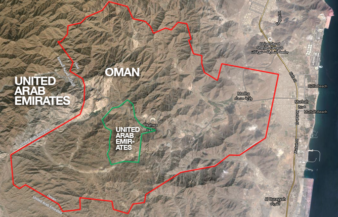
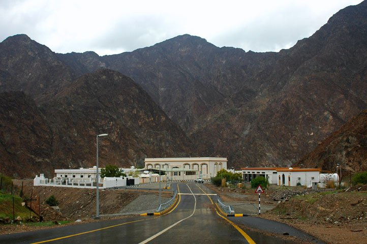

The Omani excalve of the Musandam Peninsula is home to picturesque, rocky cliffs facing the Persian Gulf. Image Source
The Arabian peninsula and the Middle East is possibly the world’s most politically controversial region. With wars raging in Syria, Iraq, Palestine, Israel and more, territorial and border disputes are not uncommon in the region. Many countries in the region have a shared cultural, linguistic, religious and philosophical history. The differences and borders arise from historical powers, both kingdoms and colonial powers, that ruled the area.
The United Arab Emirates is a country that serves as an example of both. It was formed as a collusion of seven (initially six) Emirates1 in the peninsula, after the British withdrew from the Gulf, to maintain power in the region. Its neighbor Oman remains a Sultanate2. The two countries share an interesting divide, Oman retains power over a semi-exclave3 in the northeast tip of the UAE, called the Musandam peninsula, and also an enclave4 of the UAE called Madha. The latter enclave is home to a UAE exclave5, making the Emirati town of Nahwa a second-order enclave. Residents of Nahwa have to cross through 2 border checkpoints to get to their own country.
Map showing the second-order enclave of Nahwa, UAE. Image Source
The second-order enclave, along with Madha and the Musandam governorate of Oman, was formed as a result of tribal allegiances of the villagers in the region during the formation of the UAE. While most of the villages chose to be a part of what are now the Emirates of Sharjah, Fujairah, and Ras-Al-Khaimah, the people of Madha chose to be a part of Oman.
Nahwa, UAE is a small enclave of Oman situated in the mountains. Image Source
There may not be many problems caused in this area by the existence of a second-order enclave, but the existence of one is intriguing, especially considering how it was apparently formed. The lack of foresight with the villagers as to what diplomatic problems that their choices could result in is apparent. The average person, whether it be then or now, would not assume the choice of whom they align with now could define something as important as international borders in a politically heated region. It is only beneficial to the region that there is no political turmoil yet and that the population of Nahwa and Madha are very small (~4000 combined), otherwise, this border could be a mess.
1region or land of an Emir, an Islamicate ruler
2an Islamic monarchy
3An exclave who is surrounded on land by a foreign country, and the sea
4A region of foreign territory surrounded by a country
5A region of the country that is separated from it by foreign land
{kind=link}
{kind=link}
{kind=link}